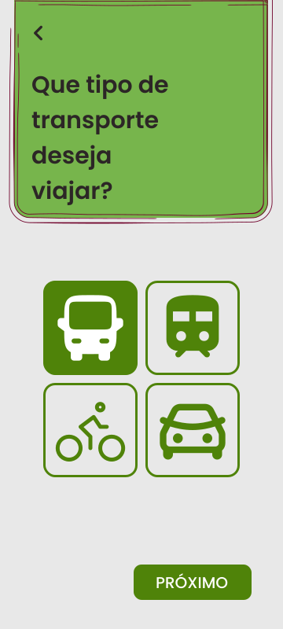
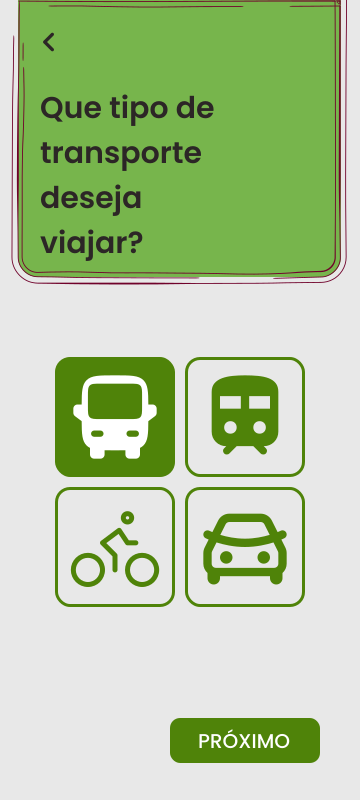

Sobre mim
Comecei a minha imersão na área de T.I há menos de um ano, e realmente é aquilo que todos falam: "a área de T.I é para todos, basta você se identificar".
E logo de cara me encantei com o universo do Web Design, de como funciona a construção de um site ou de um aplicativo e de como um Web Designer é extremamamente importante para o desenvolvimanto, porque são eles que vão fazer com que o produto seja o mais usável o possível com bases em entrevistas e muita pesquisa para entender o usuário e suas necessidades.
Logo depois entendi que se eu queria ser um profissional mais completo, eu deveria entender e aprender um pouco sobre o desenvolvimento front-end, e foi aí que eu comecei a estudar HTML, CSS e JavaScript, e me encantei com o poder que essas linguagens tem de transformar um site estático em algo dinâmico e interativo.
Hoje, estou em busca de uma oportunidade de estágio ou trainee, para que eu possa colocar em prática todo esse conhecimento adquirido.

 
